помощник
Субтитры: Русские и Английские | 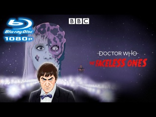 |
|---|---|
+ Реконструкция (эпизоды 2, 4, 5, 6) Субтитры: Русские и Английские | 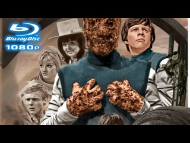 |
+ Черно-белая версия в соотношении сторон 4:3 (эпизоды 2, 4, 5, 6) Субтитры: Русские и Английские | 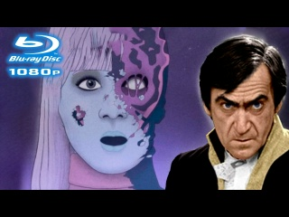 |
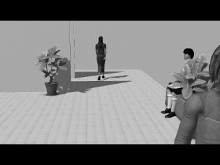 эп.2 - Who Recons | 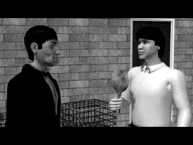 эп.4 - Who Recons |
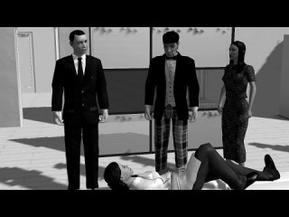 эп.5 - Who Recons | 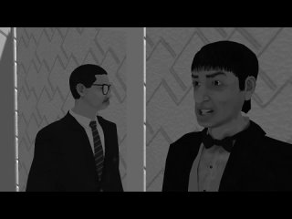 эп.6 - Who Recons |
| Сохранился только 3-й эпизод - 16mm t/r * 1-й эпизод найден в 1987 г. - 16mm t/r * На утерянные 2, 4-6 эпизоды имеется реконструкция * Имеется ч/б и цветная анимация на все эпизоды |
|---|
| | | помощник |
«Безликие» — холодный, почти детективный триллер в стенах аэропорта: среди рейсов и расписаний прячется заговор пришельцев‑хамелеонов, способных принимать чужие лица и стирать личности, а Второй Доктор с командой распутывает цепочку исчезновений, где каждый знакомый может оказаться не тем, кем кажется; тон истории — настороженный и напряжённый, будто в каждом отражении мелькает чужая тень, а доверие становится самым хрупким оружием.
 VHS - ноябрь 2003 |  DVD+Boxset - 1 ноября 2004 | 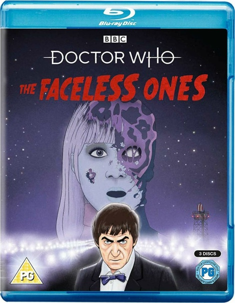 Blu-ray (Анимация) - 16 марта 2020 * Версия в нашей группе |
|---|
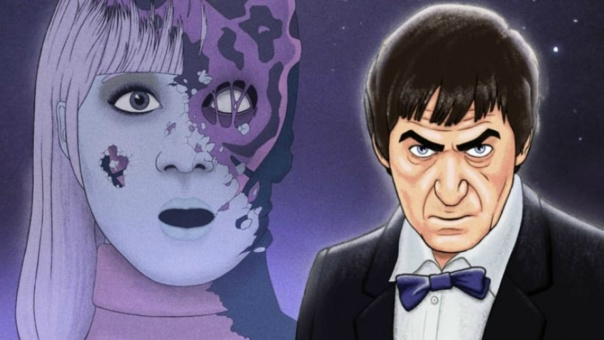
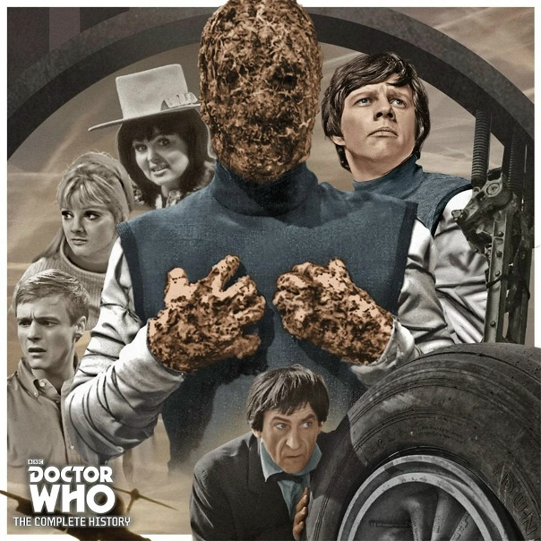
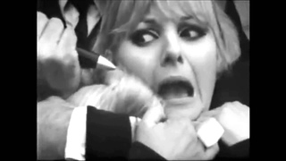